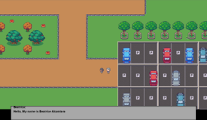

Projects
AI Assisted Offline Reconnaissance and Hacking Tool
Type: Capstone
• Developed prototype cybersecurity tool optimized for offline, penetration testing in air-gapped or highly controlled environments
• Designed offline AI solution to assist in giving recommendations and analysis
• Integrated Linux, automation, single-board computing, and reducing detectable digital footprint for covert red team operations
• Engineered a Bluetooth serial communication feature to establish wireless access channels to target devices, enabling remote command execution.
Skills: Linux, AI/ML, Bluetooth
Project Name 2 (with Images)
Type: Advanced Python Applications Final

- Created and developed a story-based RPG that follows a scene from the short story The Evening and the Morning and the Night by Octavia E. Butler
- Follows a character and has a follower character giving dialogue when certain points of the map are triggered
- Fully made with python, utilizing the PyGame library
Technologies: Python, PyGame, Tiled
Project Name 3
Type: Personal

- Builds an offline policy assistant application using PyQt5, which allows users to load company policy documents, embed them into a ChromaDB database, and query them locally.
- Processes PDF and text files by extracting their contents, chunking the text, generating embeddings with SentenceTransformers, and storing them in a searchable vector database.
- Retrieves relevant policy information using semantic search and generates answers using locally hosted Ollama LLM models selected by the user.
Technologies: AI/ML, Python, PyQT5